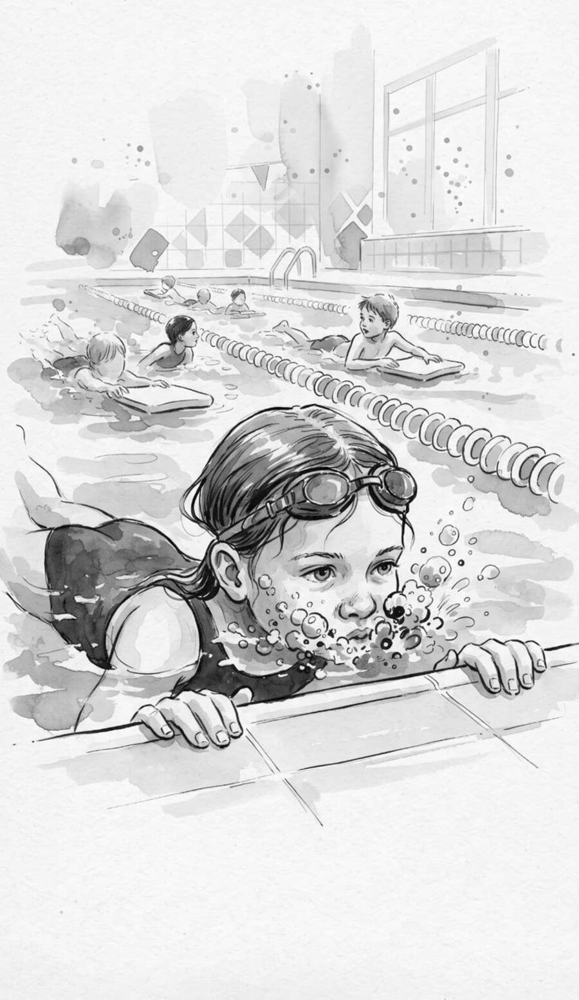

Ruby and the Three-Second Face
Brave for three seconds at a time

Eleven kids had put their faces in the water. Ruby had counted.
The pool at the Y smelled like a bleach bottle left out in the sun. Coach Dana stood in the shallow end with her whistle on a purple string, and every kid in Level Two held the wall and dunked. Bloop, up. Bloop, up. Eleven wet heads in a row, grinning like it was nothing.
Ruby held the wall with both hands and kept her face exactly where it was.
“Ruby,” said Coach Dana. “Face in.”
“I'm getting ready.”
“You've been getting ready since Tuesday.”
That was true. On Tuesday Ruby had gotten her chin wet. On Thursday she had gotten her bottom lip wet, which Coach Dana said didn't count, because lips were basically outside your face.
The water wasn't the problem. Ruby liked water. Hoses, baths, Grandma's sprinkler, the brown puddle by the mailbox. What she did not like was water going up her nose and into her ears and over her eyes all at once, in the dark, with no way to tell when it would stop.
“Okay,” said Coach Dana. “Kickboards, everybody. Ruby, you keep working on it.”
Everybody else got a kickboard. Ruby got a wall. She looked down. The water looked back, wobbly and blue, with somebody's Band-Aid floating in it.
Fine. All at once, like ripping off a sticker. Nose pinched with one hand. Eyes squeezed so tight she saw sparks. A breath so big her shoulders went up past her ears, and down she went.
Under was loud. Under was a roaring in both ears like a bathtub draining. Water went straight up her nose anyway, because it turned out you could not hold a nose all the way shut when you were also flapping your other arm around. She came up coughing and snorting with her goggles on her forehead, one strap hooked over her ear, and something in her nose that felt like a cold spoon.
The whole Level Two lane had turned around on their kickboards to watch. “Whoa,” said a boy named Deshawn. “Did you sneeze underwater?”
Ruby hung on the wall and dripped. Her left ear made a squelching sound. She tipped her head and a little waterfall came out of it onto the tile.
Next to the big pool was the baby pool, which was about as deep as a cereal bowl. A boy in a puffy swim diaper stood in the middle of it with his mom kneeling beside him.
“Ready?” said his mom. “One, two, three.”
The boy bent over, stuck just his mouth in, and blew. Bubbles fizzed up around his cheeks. He came up laughing so hard he fell over sideways, sat up, and did it again. Mouth in. Bubbles. Up. Above the nose, he wasn't even wet.
Ruby watched him do it six times. He wasn't being brave. Mouth was all he was doing.
Mouth was not nose. Mouth she could do.
She turned back to the wall. Bent forward. Put just her mouth in the water, and blew.
Bubbles. Loud ones. They tickled her chin. She counted one, two, three in her head and came up. Nothing had gone anywhere it shouldn't.
She did it again, and this time went one step lower. Chin in. Blow. Three. Up. Then she stopped, because next was nose, and nose was the whole problem.
Coach Dana walked past behind her on the deck, flip-flops slapping. “Wall's not going anywhere,” she said, and kept walking.
Ruby breathed in, put her mouth and chin under, then pushed her nose under too, and blew as hard as she could out of everything at once. Bubbles roared out of her nose like a dragon. And nothing went in. Not one drop. The air coming out was pushing the water away. She came up and stared at the water. Ha.
Mouth, chin, nose. Blow, blow, blow. Three seconds. Up. She did that four times, until the nose part stopped feeling like a dare.
Eyes were last. Eyes were the easy part now, because eyes didn't have holes in them.
Mouth. Chin. Nose. Eyes. She kept the bubbles going the whole way and counted one, two, three, and the roaring in her ears was still there but it was just a sound, and it stopped when she stood up.
Her hair was plastered flat like seaweed. Water ran off the end of her nose. “Again.”
What did you learn?
Ruby's problem wasn't being scared of water. It was trying to do everything at once. If there's something you're supposed to do that feels too big, find the smallest piece of it. Do only that piece. Count to three. Then add the next piece. You don't have to be brave for a whole minute. Three seconds is enough to start.
Your turn
- Think of one thing you've been “getting ready” to do for a while. Say it out loud. Then say the smallest first piece of it.
- Try just that first piece, once, today. Count to three while you do it. Then tell a grown-up what happened.
In the book, this page has lines to write on. A scrap of paper works just as well.